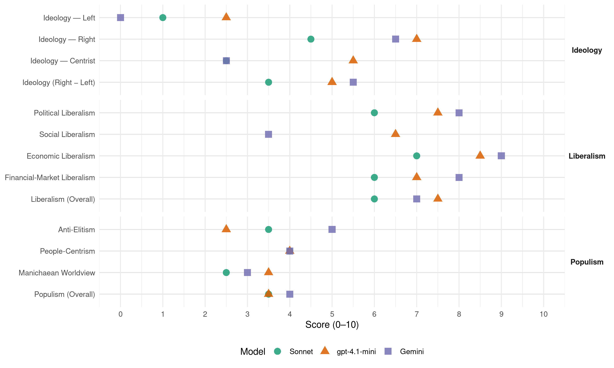

Republicans (United States, 2008)
manifesto_id 61620_200811
Get full text: This site shows derived annotations and short verbatim quotes only. The full manifesto text is © Manifesto Project / WZB — obtain it via manifesto-project.wzb.eu using the manifesto_id above.
Headline scores
| Dimension | Sonnet | gpt-4.1-mini | Gemini |
|---|---|---|---|
| Populism (Overall) | 3.5 | 3.5 | 4.0 |
| Anti-Elitism | 3.5 | 2.5 | 5.0 |
| People-Centrism | 4.0 | 4.0 | 4.0 |
| Manichaean Worldview | 2.5 | 3.5 | 3.0 |
| Ideology (Right − Left) | 3.5 | 5.0 | 5.5 |
| Liberalism (Overall) | 6.0 | 7.5 | 7.0 |
| Political Liberalism | 6.0 | 7.5 | 8.0 |
| Social Liberalism | – | 6.5 | 3.5 |
| Economic Liberalism | 7.0 | 8.5 | 9.0 |
| Financial-Market Liberalism | 6.0 | 7.0 | 8.0 |
Evidence per dimension
Economic Liberalism
Gemini · score 9.0 · verified · chunk 1
“We believe in the free market”
We do not support government bailouts of private institutions. Government interference in the markets exacerbates problems in the marketplace and causes the free market to take longer to correct itself. We believe in the free market as the best tool to sustained prosperity
Gemini · score 9.0 · verified · chunk 2
“At the center of a free economy is”
At the center of a free economy is the right of citizens to be secure in their property.
gpt-4.1-mini · score 9.0 · verified · chunk 1
“Republicans advocate lower taxes, reasonable regulation, and smaller, smarter government”
Republicans advocate lower taxes, reasonable regulation, and smaller, smarter government. That agenda translates to more opportunity for more people.
gpt-4.1-mini · score 8.0 · verified · chunk 2
“competition, more choice, and lower costs”
A state-regulated national market for health insurance means more competition, more choice, and lower costs.
Sonnet · score 7.0 · verified · chunk 1
“free market as the best tool”
We believe in the free market as the best tool to sustained prosperity and opportunity for all.
Sonnet · score 7.0 · verified · chunk 2
“more competition, more choice, and lower costs”
A state-regulated national market for health insurance means more competition, more choice, and lower costs.
Financial-Market Liberalism
Gemini · score 8.0 · verified · chunk 1
“allow free movement of capital.”
Our bilateral trade with China has created export opportunities for American farmers and workers, while both the requirements of the World Trade Organization and the realities of the marketplace have increased openness and the rule of law in China. We must yet ensure that China fulfils its WTO obligations, especially those related to protecting intellectual property rights, elimination of subsidies, and repeal of import restrictions. China’s full integration into the global economy requires that it adopt a flexible monetary exchange rate and allow free movement of capital.
gpt-4.1-mini · score 7.0 · verified · chunk 1
“We will insist on Internet transparency in all federal contracting”
We will provide Internet transparency in all federal contracting as a necessary step in combating cost overruns.
Sonnet · score 6.0 · verified · chunk 1
“energetic federal investigation and, where appropriate, prosecution”
We support energetic federal investigation and, where appropriate, prosecution of criminal wrongdoing in the mortgage industry and investment sector. We do not support government bailouts
Sonnet · score 6.0 · verified · chunk 2
“vibrant marketplace in selecting their student loan”
We affirm our support for the public-private partnership that now offers students and their families a vibrant marketplace in selecting their student loan provider.
Political Liberalism
Gemini · score 8.0 · verified · chunk 1
“uphold and defend our party’s core principles”
Public disgust with Washington is entirely warranted. Republicans will uphold and defend our party’s core principles: Constrain the federal government to its legitimate constitutional functions.
Gemini · score 8.0 · verified · chunk 2
“respects the civil and constitutional rights of the people”
we must always ensure that law enforcement respects the civil and constitutional rights of the people.
gpt-4.1-mini · score 8.0 · verified · chunk 1
“We support the right of states to require an official government-issued photo identification for voting”
We support the right of states to require an official government-issued photo identification for voting and call upon the Department of Justice to deploy its resources to prevent ballot tampering in the November elections.
gpt-4.1-mini · score 7.0 · verified · chunk 2
“freedom of speech and freedom of the press”
We support freedom of speech and freedom of the press and oppose attempts to violate or weaken those rights, such as reinstatement of the so-called Fairness Doctrine.
Sonnet · score 6.0 · mixed · chunk 1
“Judicial activism is a grave threat to the rule of law”
Judicial activism is a grave threat to the rule of law because unaccountable federal judges are usurping democracy, ignoring the Constitution and its separation of powers
Sonnet · score 6.0 · verified · chunk 2
“no expansion of governmental powers should occur”
However, no expansion of governmental powers should occur at the expense of our constitutional liberties.
Liberalism (Overall)
Gemini · score 7.0 · verified · chunk 1
“We believe in the free market”
We do not support government bailouts of private institutions. Government interference in the markets exacerbates problems in the marketplace and causes the free market to take longer to correct itself. We believe in the free market as the best tool to sustained prosperity
Gemini · score 7.0 · verified · chunk 2
“At the center of a free economy is”
At the center of a free economy is the right of citizens to be secure in their property.
gpt-4.1-mini · score 8.0 · verified · chunk 1
“Republicans advocate lower taxes, reasonable regulation, and smaller, smarter government”
Republicans advocate lower taxes, reasonable regulation, and smaller, smarter government. That agenda translates to more opportunity for more people.
gpt-4.1-mini · score 7.0 · verified · chunk 2
“freedom of speech and freedom of the press”
We support freedom of speech and freedom of the press and oppose attempts to violate or weaken those rights, such as reinstatement of the so-called Fairness Doctrine.
Sonnet · score 6.0 · verified · chunk 1
“free market as the best tool”
We believe in the free market as the best tool to sustained prosperity and opportunity for all.
Sonnet · score 6.0 · verified · chunk 2
“free market forces that encourage innovation, competition”
because it is isolated from the free market forces that encourage innovation, competition, affordability, and expansion of options, Medicare is especially susceptible to fraud and abuse.
Anti-Elitism
Gemini · score 6.0 · verified · chunk 1
“Public disgust with Washington is entirely warranted.”
Members of Congress have been indicted for violating the public trust. Public disgust with Washington is entirely warranted. Republicans will uphold and defend our party’s core principles
Gemini · score 4.0 · verified · chunk 2
“empowers Washington bureaucrats at the expense of patients”
We will not put the system on a path that empowers Washington bureaucrats at the expense of patients.
gpt-4.1-mini · score 2.0 · verified · chunk 1
“Public disgust with Washington is entirely warranted”
Public disgust with Washington is entirely warranted. Republicans will uphold and defend our party’s core principles: Constrain the federal government to its legitimate constitutional functions.
gpt-4.1-mini · score 3.0 · verified · chunk 2
“lawyers and bureaucrats”
Families and health care providers are the key to real reform, not lawyers and bureaucrats. To empower families, we must make insurance more affordable and more secure, and give employees the option of owning coverage that is not tied to their job.
Sonnet · score 4.0 · verified · chunk 1
“entrenched culture of official Washington”
The entrenched culture of official Washington — an intrusive tax-and-spend liberalism — remains a formidable foe, but we will confront and ultimately defeat it.
Sonnet · score 3.0 · verified · chunk 2
“staggering inefficiency, maddening irrationality, and uncontrollable costs”
We will not replace the current system with the staggering inefficiency, maddening irrationality, and uncontrollable costs of a government monopoly.
Ideology — Centrist
Gemini · score 3.0 · verified · chunk 1
“returning power to the people.”
Additionally, as important as returning power to the states is returning power to the people. As the Declaration of Independence states, our rights are
Gemini · score 2.0 · verified · chunk 2
“empowerment of patients”
We will continue to advocate for simplification of the system and the empowerment of patients.
gpt-4.1-mini · score 5.0 · verified · chunk 1
“The American people believe Washington is broken”
The American people believe Washington is broken … and for good reason. Short-term politics overshadow the long-term interests of the nation.
gpt-4.1-mini · score 6.0 · verified · chunk 2
“patients and their health care providers”
Republicans believe the key to real reform is to give control of the health care system to patients and their health care providers, not bureaucrats in government or business.
Sonnet · score 2.0 · verified · chunk 1
“That goal still requires the unity of Americans”
That goal still requires the unity of Americans beyond differences of party and conflicts of personality.
Sonnet · score 3.0 · verified · chunk 2
“tribal communities, not Washington bureaucracies”
Republicans believe that economic self-sufficiency is the ultimate answer to the challenges in Indian country and that tribal communities, not Washington bureaucracies, are better situated to craft local solutions.
Ideology — Left
Gemini · score 0.0 · verified · chunk 1
“oppose any restrictions or conditions”
The rights of citizenship do not stop at the ballot box. They include the free-speech right to devote one’s resources to whatever cause or candidate one supports. We oppose any restrictions or conditions upon those activities
Gemini · score 0.0 · verified · chunk 2
“oppose socialized medicine in the form of”
Republicans support the private practice of medicine and oppose socialized medicine in the form of a government-run universal health care system.
gpt-4.1-mini · score 2.0 · verified · chunk 1
“The other party wants more government control over people’s lives and earnings”
The other party wants more government control over people’s lives and earnings; Republicans do not. The other party wants to continue pork barrel politics; we are disgusted by it, no matter who practices it.
gpt-4.1-mini · score 3.0 · verified · chunk 2
“inequities in the current tax code”
Republicans propose to correct inequities in the current tax code that drive up the number of uninsured and to level the playing field so that individuals who choose a health insurance plan in the individual market face no tax penalty.
Sonnet · score 1.0 · verified · chunk 1
“we do not support government bailouts”
We do not support government bailouts of private institutions. Government interference in the markets exacerbates problems in the marketplace
Sonnet · score 1.0 · verified · chunk 2
“We will not raise taxes instead of reducing”
We will not raise taxes instead of reducing health care costs.
Ideology (Right − Left)
Gemini · score 7.0 · verified · chunk 1
“We oppose amnesty.”
except as provided by federal law. We oppose amnesty. The rule of law suffers if government policies encourage
Gemini · score 4.0 · verified · chunk 2
“gangs composed largely of illegal aliens”
It has escalated with the rise of gangs composed largely of illegal aliens, most of whose victims are law-abiding members
gpt-4.1-mini · score 5.0 · verified · chunk 1
“Public disgust with Washington is entirely warranted”
Public disgust with Washington is entirely warranted. Republicans will uphold and defend our party’s core principles: Constrain the federal government to its legitimate constitutional functions.
gpt-4.1-mini · score 5.0 · verified · chunk 2
“lawyers and bureaucrats”
Families and health care providers are the key to real reform, not lawyers and bureaucrats. To empower families, we must make insurance more affordable and more secure, and give employees the option of owning coverage that is not tied to their job.
Sonnet · score 5.0 · verified · chunk 1
“completing the border fence quickly”
giving our agents the tools and resources they need to protect our sovereignty, completing the border fence quickly and securing the borders
Sonnet · score 2.0 · verified · chunk 2
“empowers Washington bureaucrats at the expense of patients”
We will not put the system on a path that empowers Washington bureaucrats at the expense of patients.
Ideology — Right
Gemini · score 8.0 · verified · chunk 1
“We oppose amnesty.”
except as provided by federal law. We oppose amnesty. The rule of law suffers if government policies encourage
Gemini · score 5.0 · verified · chunk 2
“gangs composed largely of illegal aliens”
It has escalated with the rise of gangs composed largely of illegal aliens, most of whose victims are law-abiding members
gpt-4.1-mini · score 7.0 · verified · chunk 1
“Border security is essential to national security”
Border security is essential to national security. In an age of terrorism, drug cartels, and criminal gangs, allowing millions of unidentified persons to enter and remain in this country poses grave risks to the sovereignty of the United States and the security of its people.
gpt-4.1-mini · score 7.0 · verified · chunk 2
“taxpayer money is focused on caring for U.S. citizens”
We must ensure that taxpayer money is focused on caring for U.S. citizens and other individuals in our country legally.
Sonnet · score 6.0 · verified · chunk 1
“completing the border fence quickly”
giving our agents the tools and resources they need to protect our sovereignty, completing the border fence quickly and securing the borders
Sonnet · score 3.0 · verified · chunk 2
“Illegal allien gang members must be removed”
It has escalated with the rise of gangs composed largely of illegal aliens. Illegal allien gang members must be removed from the United States immediately upon arrest.
Manichaean Worldview
Gemini · score 4.0 · verified · chunk 1
“entrenched culture of official Washington”
The entrenched culture of official Washington — an intrusive tax-and-spend liberalism — remains a formidable foe, but we will confront and ultimately defeat it.
Gemini · score 2.0 · verified · chunk 2
“stark contrast to the other party’s insistence”
This is in stark contrast to the other party’s insistence on putting Washington in charge of patient care
gpt-4.1-mini · score 3.0 · verified · chunk 1
“The entrenched culture of official Washington — an intrusive tax-and-spend liberalism — remains a formidable foe”
The entrenched culture of official Washington — an intrusive tax-and-spend liberalism — remains a formidable foe, but we will confront and ultimately defeat it.
gpt-4.1-mini · score 4.0 · verified · chunk 2
“government monopoly”
We will not replace the current system with the staggering inefficiency, maddening irrationality, and uncontrollable costs of a government monopoly.
Sonnet · score 3.0 · verified · chunk 1
“Democrats’ naive thinking that international terrorists”
They should have put an end to the Democrats’ naive thinking that international terrorists could be dealt with within the normal criminal justice system
Sonnet · score 2.0 · verified · chunk 2
“Democrats~ attempted government takeover of health care”
The American people rejected Democrats~ attempted government takeover of health care in 1993, and they remain skeptical of politicians who would send us down that road.
People-Centrism
Gemini · score 5.0 · verified · chunk 1
“returning power to the people.”
Additionally, as important as returning power to the states is returning power to the people. As the Declaration of Independence states, our rights are
Gemini · score 3.0 · verified · chunk 2
“give control of the health care system to patients”
Republicans believe the key to real reform is to give control of the health care system to patients and their health care providers
gpt-4.1-mini · score 3.0 · verified · chunk 1
“The American people believe Washington is broken”
The American people believe Washington is broken … and for good reason. Short-term politics overshadow the long-term interests of the nation.
gpt-4.1-mini · score 5.0 · verified · chunk 2
“The American people rejected Democrats”
The first rule of public policy is the same as with medicine: Do no harm. The American people rejected Democrats~ attempted government takeover of health care in 1993, and they remain skeptical of politicians who would send us down that road.
Sonnet · score 4.0 · verified · chunk 1
“The American people believe Washington is broken”
The American people believe Washington is broken … and for good reason. Short-term politics overshadow the long-term interests of the nation.
Sonnet · score 4.0 · verified · chunk 2
“give control of the health care system to patients”
Republicans believe the key to real reform is to give control of the health care system to patients and their health care providers, not bureaucrats in government or business.
Populism (Overall)
Gemini · score 5.0 · verified · chunk 1
“Public disgust with Washington is entirely warranted.”
Members of Congress have been indicted for violating the public trust. Public disgust with Washington is entirely warranted. Republicans will uphold and defend our party’s core principles
Gemini · score 3.0 · verified · chunk 2
“empowers Washington bureaucrats at the expense of patients”
We will not put the system on a path that empowers Washington bureaucrats at the expense of patients.
gpt-4.1-mini · score 3.0 · verified · chunk 1
“Public disgust with Washington is entirely warranted”
Public disgust with Washington is entirely warranted. Republicans will uphold and defend our party’s core principles: Constrain the federal government to its legitimate constitutional functions.
gpt-4.1-mini · score 4.0 · verified · chunk 2
“lawyers and bureaucrats”
Families and health care providers are the key to real reform, not lawyers and bureaucrats. To empower families, we must make insurance more affordable and more secure, and give employees the option of owning coverage that is not tied to their job.
Sonnet · score 4.0 · verified · chunk 1
“entrenched culture of official Washington”
The entrenched culture of official Washington — an intrusive tax-and-spend liberalism — remains a formidable foe, but we will confront and ultimately defeat it.
Sonnet · score 3.0 · verified · chunk 2
“not bureaucrats in government or business”
Republicans believe the key to real reform is to give control of the health care system to patients and their health care providers, not bureaucrats in government or business.
Social Liberalism